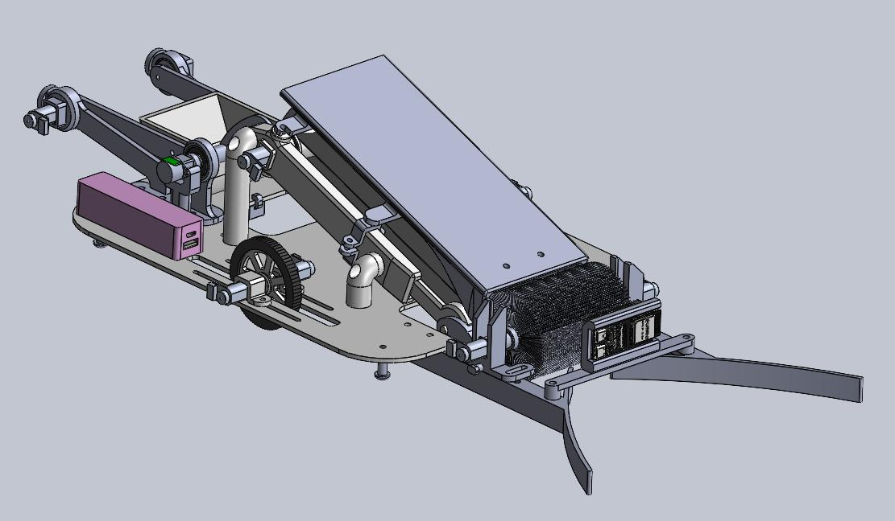
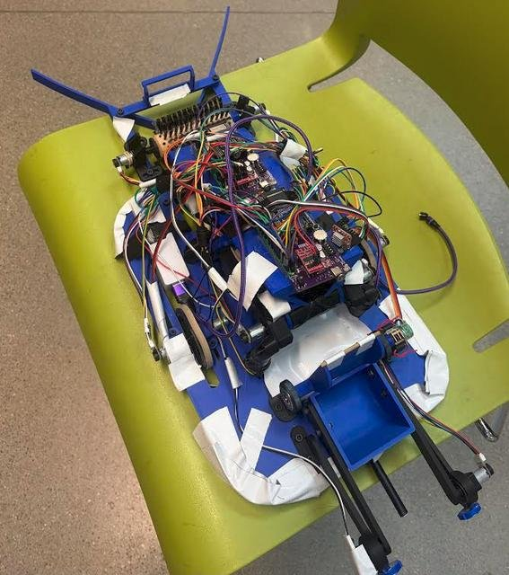

Fastener Recognition
Rotated-box detection of screws, bolts and nuts for robotic bin picking, evaluated separately for each image source.
View Project02Robotics, MSE 2202 team project2026
A self-powered robot built by a team of four for MSE 2202B, Introduction to Mechatronic Design. A brush and scrapers feed erasers onto a conveyor, a colour sensor picks out the target colour, and an infrared beacon guides the robot back to its base to unload.
The brief was a fully autonomous, self-powered robot that works inside a 15 m² area of unknown terrain. It had to collect erasers off the floor, keep the ones of a target colour and bring them back to a base station, all within 120 seconds on battery power. It also had to pass over floor bumps such as outlets, cost no more than $70 and fit in an MSE 2202 locker without being taken apart.
Two curved scrapers sweep erasers toward the middle of the robot. There a rotating bristle brush pushes them up a 3D-printed ramp onto a ribbed TPU conveyor belt. A cover over the belt narrows to one eraser length at the colour sensor, so erasers reach it one at a time. At the top of the belt, a stepper-driven flipper guides target erasers into a bucket at the rear.
The robot drives on two wheels with a caster, a choice made over four-wheel and omnidirectional drives for cost, power draw and simplicity. Support pegs at the front and back touch the floor only if the robot tips. At the base, magnets on the bucket arms lock the robot against a printed stand that holds the IR beacon, and a limit switch on the arm starts the dump. Every printed part is PLA except the belt.
Two ESP32 MSEduino boards share the work. The first runs the drive motors, the IR receiver and the limit switch, and signals the second when the switch closes. The second runs the conveyor, brush, colour sensor, flipper and bucket motor. Splitting the boards removed timing conflicts and spread the current over separate battery circuits. The base station is an IR LED with a 200 Ω resistor, driven by an ESP32-C3.


The TCS34725 sensor looks straight down at the belt, set to a 50 ms integration time and 4x gain. Each reading's red, green and blue values are divided by its clear channel, so changes in room lighting cancel out. The firmware then measures the Euclidean distance from the normalised reading to two profiles calibrated on the robot: the bare belt and the target eraser.
A reading more than 0.07 from the belt profile means an eraser is present. A reading within 0.07 of the target profile is a match, and the flipper turns to send that eraser to the bucket. The two profiles are 0.148 apart, more than the two thresholds combined, so the bare belt can never count as a match. After each match, an 800 ms lockout stops the flipper chattering while one eraser passes.
Each leg of the path is driven by encoder count. The firmware converts a distance to encoder pulses using the wheel diameter, and the robot drives until it has counted them. For the first minute it follows a fixed collection path. It then turns for home: while the IR receiver sees the beacon the robot backs toward it, and if the signal is lost for more than 500 ms it turns in place to sweep for it again.
Camera-based targeting was planned, and the scrapers carry a camera mount, but it was dropped for lack of time. The fixed path kept the program simple and kept the robot from getting stuck. The cost is coverage: the robot only collects along a narrow corridor of the area.
Each test was judged against a pass criterion set from the original requirements. In three sorting trials of ten erasers in random colours and positions, the flipper routed 9 of 10 correctly every time. Collection while driving, with sorting running, succeeded 90% of the time, and the robot crossed floor bumps without trouble.
Return to base, counted as reaching magnet contact with the station within 120 seconds, succeeded in 50% of trials against a 70% target, so it failed. The IR receiver accepts the beacon only over a narrow angle, so a small heading error lost the signal. Low ground clearance was the other cause: erasers bunched near the wheels and wedged under the frame, which the tape skirt reduced but did not stop.
These are small samples. Each sorting and collection result comes from three trials, and the report states that at least ten independent runs per test would be needed to begin estimating a 95% confidence interval. The report treats them as indicative rather than definitive.
The hardest problem was getting erasers from the floor to the sensor reliably. The first belt, made of duct tape, slipped and was replaced with the printed TPU belt. The brush jammed when the robot drove into a pile, so it was moved onto a vertical rail held down by elastic bands: it lifts over a pile, and the bands keep enough pressure on it to pick everything up. The ramp went through several versions until its curve followed the brush radius, slightly offset. A tape skirt and internal barriers keep erasers from wedging under the chassis or falling out.
The report recommends three IR receivers at 0° and ±30°, which it estimates would widen the detection angle from about 15° to 75°, and a higher chassis to clear loose erasers. It also recommends an enclosed bucket inside the frame, a small agitator motor at the conveyor entrance to break up clusters, and a camera for spotting erasers paired with ultrasonic sensors for walls, so the robot can search the whole area rather than one line. Future tests should use a fixed number of runs from random starting points.
Rotated-box detection of screws, bolts and nuts for robotic bin picking, evaluated separately for each image source.
View Project